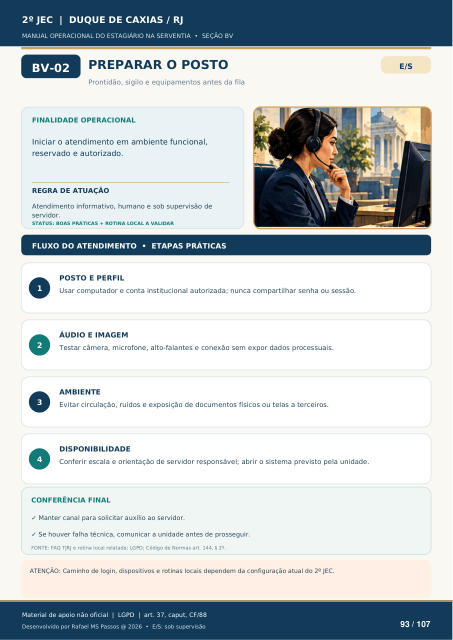

PREPARAR O POSTO
Prontidão, sigilo e equipamentos antes da fila
FINALIDADE OPERACIONAL
Iniciar o atendimento em ambiente funcional, reservado e autorizado.
REGRA DE ATUAÇÃO
Atendimento informativo, humano e sob supervisão de servidor.
STATUS: BOAS PRÁTICAS + ROTINA LOCAL A VALIDAR
FLUXO DO ATENDIMENTO • ETAPAS PRÁTICAS
POSTO E PERFIL
Usar computador e conta institucional autorizada; nunca compartilhar senha ou sessão.
ÁUDIO E IMAGEM
Testar câmera, microfone, alto-falantes e conexão sem expor dados processuais.
AMBIENTE
Evitar circulação, ruídos e exposição de documentos físicos ou telas a terceiros.
DISPONIBILIDADE
Conferir escala e orientação de servidor responsável; abrir o sistema previsto pela unidade.
CONFERÊNCIA FINAL
Manter canal para solicitar auxílio ao servidor.
Se houver falha técnica, comunicar a unidade antes de prosseguir.
FONTE: FAQ TJRJ e rotina local relatada; LGPD; Código de Normas art. 144, § 2º.
ATENÇÃO: Caminho de login, dispositivos e rotinas locais dependem da configuração atual do 2º JEC.
Ver também o infográfico original (página 93)
